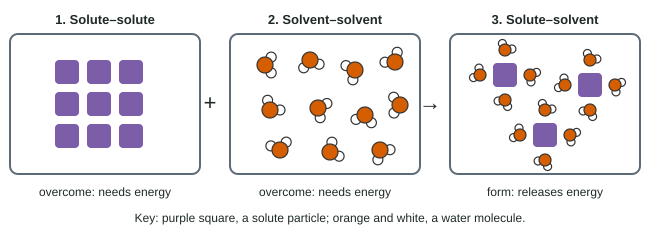

Oil and vinegar separate no matter how hard you shake the bottle, but sugar disappears into tea. Grease will not wash off with water but comes off with soap. Whether one substance dissolves in another is not luck. It follows from the same intermolecular forces you have used all unit.
What dissolving trades
Solubility is how much of a substance (the solute) dissolves in a given amount of solvent at a given temperature, for example 36 g of NaCl per 100 g of water at 20 °C. A substance that dissolves to a large extent is soluble; one that dissolves very little is insoluble. Two liquids that mix in all proportions, such as ethanol and water, are miscible; two that separate into layers, such as oil and water, are immiscible.
For a solute to dissolve, three things happen at the particle level (Figure 1):
- Solute particles are pulled away from each other: solute–solute attractions are overcome.
- Solvent molecules move apart to make room: solvent–solvent attractions are overcome.
- Solute and solvent particles come together: solute–solvent attractions form.

A substance dissolves well when the new solute–solvent attractions are comparable in strength to the attractions they replace. If they are much weaker, the particles stay with their own kind and the substance does not dissolve.
"Like dissolves like"
This leads to a rule of thumb: like dissolves like.
- Polar and ionic solutes dissolve in polar solvents. Sugar dissolves in water because its many –OH groups hydrogen-bond to water molecules, replacing the hydrogen bonds that held sugar to sugar and water to water. Many ionic compounds dissolve in water because strong ion-dipole attractions replace the ionic bonds and hydrogen bonds that are lost.
- Nonpolar solutes dissolve in nonpolar solvents. Grease and wax dissolve in hexane because dispersion forces between solute and solvent are about as strong as the dispersion forces lost.
- Nonpolar solutes do not dissolve well in water. Hexane molecules can attract water molecules only by weak dispersion and dipole-induced dipole forces. To fit a hexane molecule in, water would have to give up some of its strong hydrogen bonds and get very little back. Water molecules stay hydrogen-bonded to each other and squeeze the hexane out into a separate layer.
The common mistake is to say oil and water do not mix "because they repel." Oil and water molecules do attract each other, weakly. They separate because water molecules attract each other far more strongly.
Molecules with two ends
Many molecules have a polar part and a nonpolar part, and their solubility in water depends on which dominates. In the alcohols, the –OH group hydrogen-bonds to water, but the carbon chain does not.
| Alcohol | Formula | Solubility (g per 100 g water) |
|---|---|---|
| Methanol | CH3OH | miscible |
| Ethanol | C2H5OH | miscible |
| 1-Propanol | C3H7OH | miscible |
| 1-Butanol | C4H9OH | 7.7 |
| 1-Pentanol | C5H11OH | 2.2 |
| 1-Hexanol | C6H13OH | 0.59 |
Worked example: explaining a trend. Use the table to explain why 1-hexanol is much less soluble in water than methanol.
Claim. Solubility falls as the carbon chain grows.
Evidence. Methanol (1 carbon) is miscible; 1-hexanol (6 carbons) dissolves only 0.59 g per 100 g of water.
Reasoning. Each molecule has one –OH group that hydrogen-bonds to water. The nonpolar chain attracts water only by weak dispersion forces, and to make room for it water must give up hydrogen bonds between its own molecules. A longer chain means more water–water hydrogen bonds lost for the same one –OH group gained, so less of the alcohol dissolves.
Gases in water
Gases such as O2 and CO2 dissolve slightly in water. Two conditions control how much:
- Pressure. Raising the partial pressure of the gas above the water pushes more gas molecules into it: more of them strike the surface each second. That is why a soda is bottled under CO2 pressure and fizzes when opened.
- Temperature. Gases dissolve less in warmer water. The dissolved molecules have more kinetic energy and escape the weak attractions holding them in solution more easily. Warm soda goes flat faster, and warm lakes hold less oxygen for fish.
Most solids behave the other way: more dissolves in hot water than in cold, though there are exceptions.